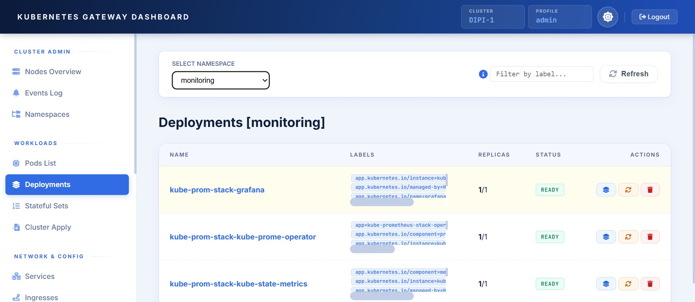
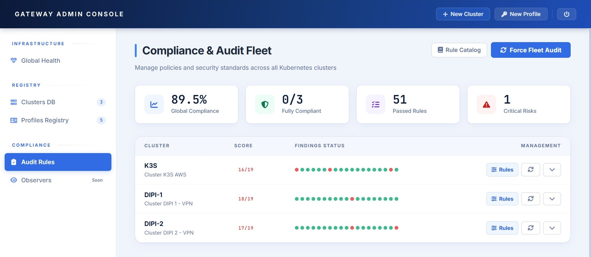

Managing access to multiple Kubernetes clusters—whether for a small team, a homelab, or edge IoT deployments—can quickly become a logistical nightmare. Distributing kubeconfig files or raw Service Account tokens to developers or collaborators is risky. Revoking compromised credentials is slow, and setting up heavy VPNs just for API access feels like overkill.
To solve this, I built the K8s Cloud Gateway: a lightweight, self-hosted web platform that acts as an authenticated proxy between users and Kubernetes clusters. It’s built with Python (FastAPI) and is designed specifically for small teams and homelabbers who want secure, multi-tenant cluster governance without the enterprise bloat.

The Core Idea: Zero-Knowledge Client Side
The primary design principle of the Gateway is simple: credentials never leave the server. Users get access, not keys.
When a user logs into a specific profile (e.g., "dev" or "admin"), the platform issues a short-lived JWT stored securely as an HttpOnly cookie. Crucially, this JWT contains no Kubernetes credentials. Every real credential (the K8s Service Account token and CA certificate) lives exclusively in the server-side SQLite database. The gateway fetches them on the fly, builds a scoped K8s client to forward the request, and immediately discards the client.
A Fully Featured K8s Console
The gateway isn't just a read-only viewer. The built-in K8s Console gives you visibility over the vast majority of Kubernetes resources and the ability to actually interact with them. You can scale workloads up or down, trigger deployment restarts, and troubleshoot active pods. Need to deploy a quick fix or a new resource? You can write or paste raw YAML manifests and apply them directly from the UI, bypassing the need for a local terminal.
Complete Helm Lifecycle Management
Managing applications is just as comprehensive. The dedicated Helm Console lets you interact with Helm releases seamlessly. You get all the core functionalities: you can lint charts before pulling the trigger, manage rollouts, and easily rollback if something goes wrong. A huge time-saver is the ability to deploy custom, unlisted applications by simply uploading a .tar or .zip package directly through the browser.
The Admin Dashboard & Built-in Auditing
Separate from the user-facing K8s and Helm consoles, there is a dedicated Admin Dashboard. This is the control room where platform administrators can register new clusters, provision user profiles, and monitor the overall status of the fleet.
To keep things secure and standardized, the dashboard goes a step further: it actively monitors registered clusters and verifies them against a set of built-in audit rules, ensuring they remain compliant with your baseline configurations and security postures.

Delegating to Kubernetes Native RBAC
I didn't want to reinvent the wheel by building a complex shadow permission system into the Gateway. Instead, the platform delegates all resource-level access control directly to Kubernetes RBAC.
If a user authenticates with a restricted "dev" profile, the Gateway simply uses that corresponding Service Account token. If that user tries to delete a namespace, the Kubernetes API server will reject it with a 403 Forbidden, and the Gateway simply propagates that error back to the frontend. It’s secure, predictable, and leverages the robust RBAC you already have configured in your clusters.
The Takeaway
The K8s Cloud Gateway isn't trying to replace massive enterprise platforms. It’s a focused, zero-knowledge tool designed to give small teams and edge deployers a secure, team-friendly control plane. By keeping credentials locked server-side, offering full K8s/Helm interaction, and relying on native RBAC, you limit the blast radius of any compromised session and make cluster management actually enjoyable.
The project is entirely open-source. You can check out the architecture, read the docs, and find the deployment instructions on the official GitHub Repository.
How do you handle K8s access for your team or homelab? Do you still pass around kubeconfigs? Let's discuss it in the comments below!